PMT brings project planning, software delivery, QA, team documentation, diagrams, and daily coordination into one application for software engineering teams.
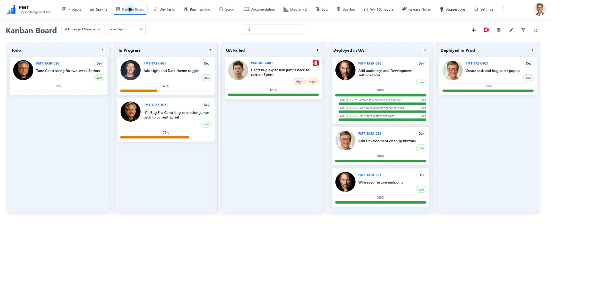
Feature Tour
These screenshots show the running local demo on October 4, 2026. Explore the thirteen featured screens below. Available actions depend on the signed-in user's permissions.
| Area | Screens |
|---|---|
| Planning and delivery | Projects, Sprints, Kanban Board, Dev Tasks, Bug Tracking, Backlog, Gantt Chart (Beta), Road Map (Beta) |
| Team coordination | Scrum, Personal Logs, WFH Schedule |
| Documentation and diagrams | Documentation, Diagram 2 |
Planning and Delivery
Projects — Organize work by project with members, dates, progress, and summary charts.
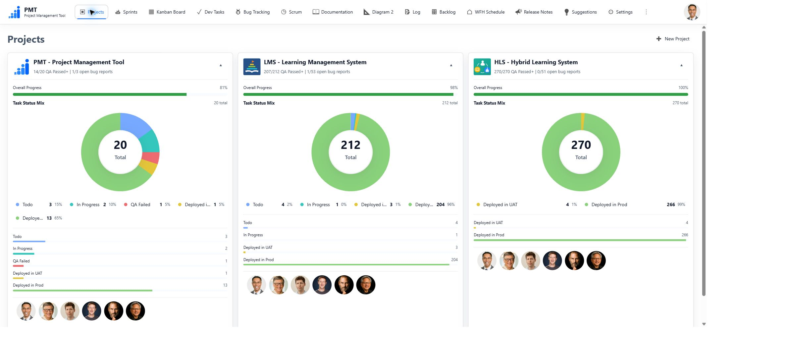
Sprints — Plan time-bounded work, assign members, track completion, and carry unfinished work forward when finishing a Sprint.
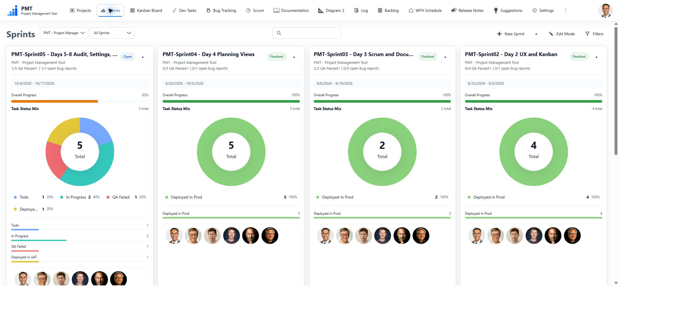
Kanban Board — The screenshot at the top of this README shows work grouped by status. Filter by Project and Sprint, drag cards between permitted status columns, and reorder work within a column.
Dev Tasks — Track assignments, priorities, dates, dependencies, and completion. Filters, charts, and manual ordering help focus the list; task details hold rich text, attachments, and work history.
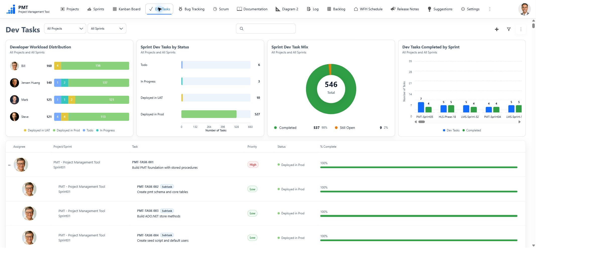
Bug Tracking — Record reporters, assignees, severity, environment, reproduction details, and Root Cause Analysis. Assigned Bugs can link to Bug Fix Dev Tasks so development and QA remain connected.
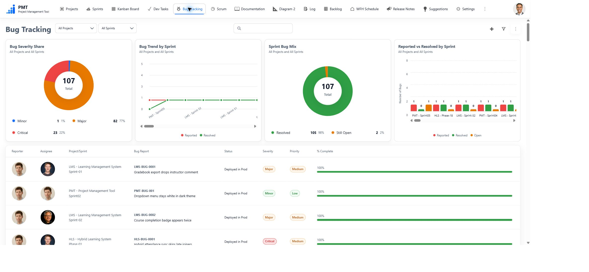
Backlog — Collect and prioritize Dev Tasks and Bugs before scheduling them into a Sprint.
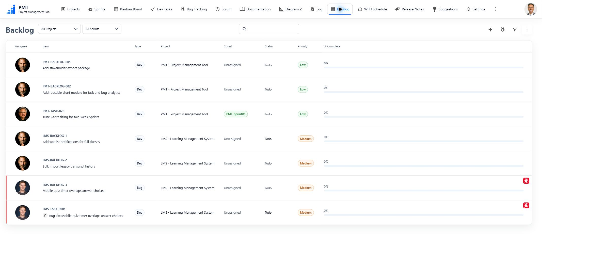
Gantt Chart (Beta) — Inspect scheduled Dev Tasks and Bugs, dependencies, and Sprint dates. Adjust calendar visibility and navigate the chart manually or with its fly-by controls.
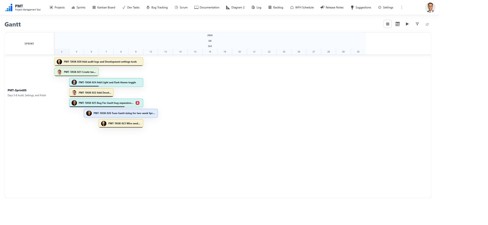
Road Map (Beta) — Compare Project and Sprint dates and progress on a timeline, with expandable Sprint detail and sorting controls.
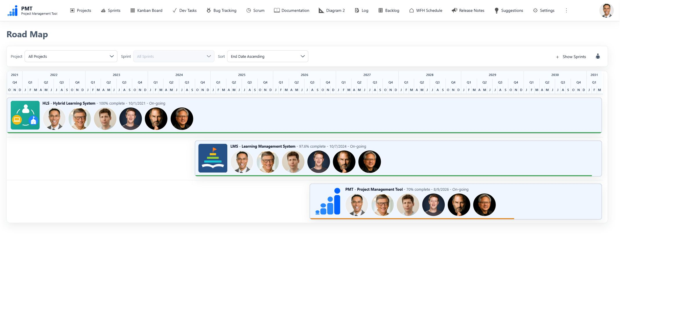
Team Coordination
Scrum — Share daily updates, filter by person and date, and check in with an attendance status. The calendar brings together attendance, holidays, and planned vacations; optional automatic refresh keeps the open view current.
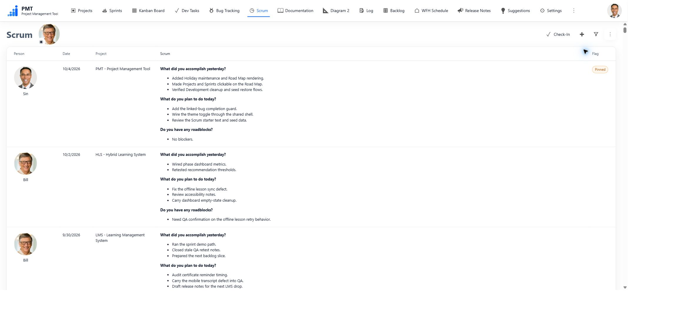
Personal Logs — Keep categorized notes visible only to their owner. This demo capture shows the signed-in user's empty Log view.
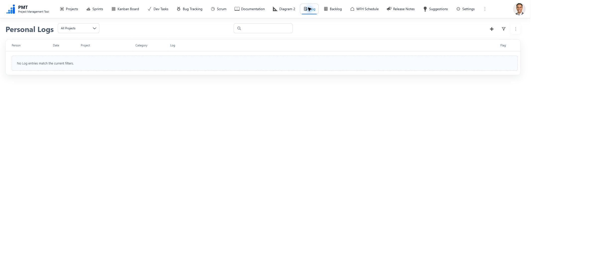
WFH Schedule — Maintain each person's weekday work-from-home pattern and the displayed user order.
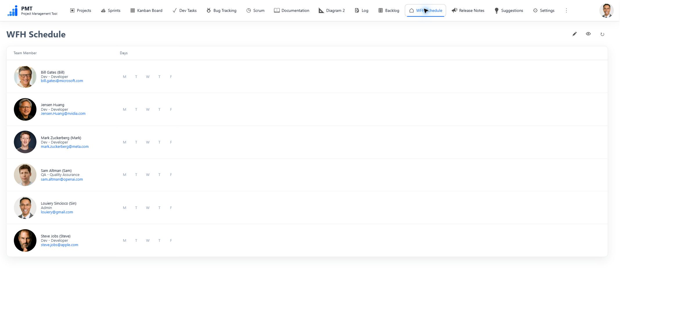
Documentation and Diagrams
Documentation — Browse documents as Cards or a hierarchical Treeview, with Project, Sprint, and search filters. Rich text supports tables, images, attachments, mentions, Live Cards, and linked diagrams. Documents can be private or public; newly created documents are private by default.
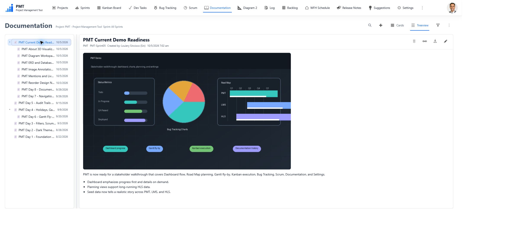
Diagram 2 — Create and inspect diagrams with shapes, text, images, entities, and field-to-field relationships. Import SQL table definitions, arrange ERDs, reuse templates, and explore UI-to-database mappings with zoom, pan, fit, and highlighting controls.
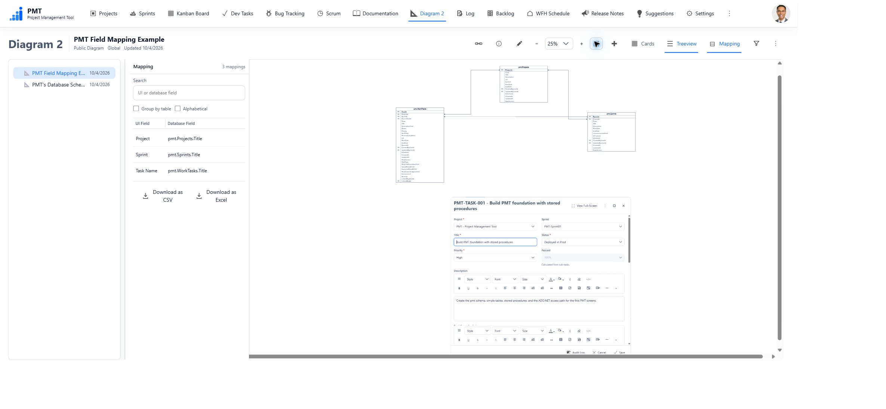
Stack
- Frontend: native JavaScript ES modules, HTML, and CSS; no frontend framework or bundler
- Server: ASP.NET Core targeting .NET 6
- Database: SQL Server 2019
- Data access: ADO.NET with stored procedures
- Application database schema:
[pmt]
Default Login
For a fresh database created from the SQL seed scripts, the login nicknames are:
- Sin
- Bill
- Sam
- Mark
- Steve
- Jensen Huang
Freshly seeded accounts start with this password:
Password1
Users can change their own password from the avatar menu after login. Restoring missing demo identities into an existing installation does not assign this public default password.
SQL Setup Order
For a fresh development or demo database, run these scripts in order:
SQL\01_CreateDatabase.sqlSQL\02_CreateStoredProcedures.sqlSQL\03_SeedData.sqlSQL\03_SeedData_ImageAnnotationTemplates.sqlSQL\03_SeedData_PMT.sqlSQL\03_SeedData_LMS.sqlSQL\03_SeedData_HLS.sqlSQL\03_SeedData_DiagramDemo.sql
The current source and fresh-rebuild scripts use Database Version 1.28. The documented deployed baseline is Version 1.27. Existing installations use the forward migration instructions in Database Versioning and the migration guide; the active operator runner is PMT_1.27_to_1.28_All.sql. Rebuild scripts are for fresh or disposable databases, not upgrades of existing user data.
Local Run
Update ConnectionStrings:PmtDatabase in appsettings.json if your SQL Server is not localhost. Configure UploadStorage:RootPath for uploaded files; it defaults to C:\PMT\UploadedFiles and must be accessible to the application account.
dotnet restore
dotnet build
dotnet run
Open http://localhost:5056.
Tests and Verification
PMT uses native ES modules in production and Node/Playwright only for tests. The repository's existing test setup uses:
npm.cmd install
npx.cmd playwright install chromium
npm.cmd run check:js
npm.cmd run test:js
npm.cmd run test:browser
dotnet restore
dotnet build
git diff --check
npm.cmd run test:browser starts PMT on http://127.0.0.1:5056 unless PMT_BASE_URL is set. The browser smoke tests mock API responses with deterministic test data so they do not require a live SQL Server. Run the manual smoke test against disposable development data for full database-backed CRUD verification.
Folder Structure
Endpoints/ Minimal API endpoint groups
Data/ SqlPmtStore partials using ADO.NET stored procedures
Models/ Plain DTO and input models
SQL/ [pmt] schema, stored procedures, and seed scripts
wwwroot/js/core/ API, state, preferences, auth, router, shell
wwwroot/js/shared/ Pure reusable rules, dates, selectors, text/link helpers
wwwroot/js/components/ Reusable UI markup helpers
wwwroot/js/features/ Screen-owned feature modules
wwwroot/css/ Tokens, themes, layout, components, and feature styles
tests/js/ Node unit tests for pure frontend business logic
tests/browser/ Playwright smoke tests for the real browser UI
docs/ Architecture, domain, design, smoke docs, and screenshots
Deployment
See the IIS setup guide.